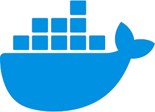
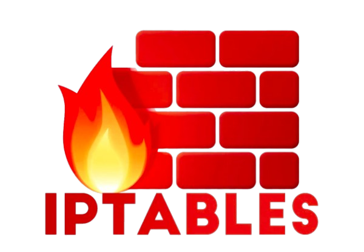
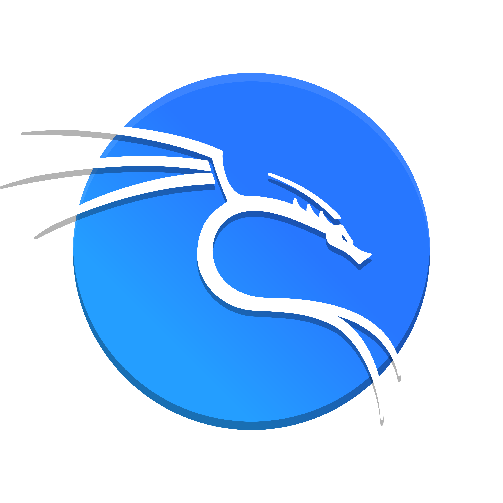
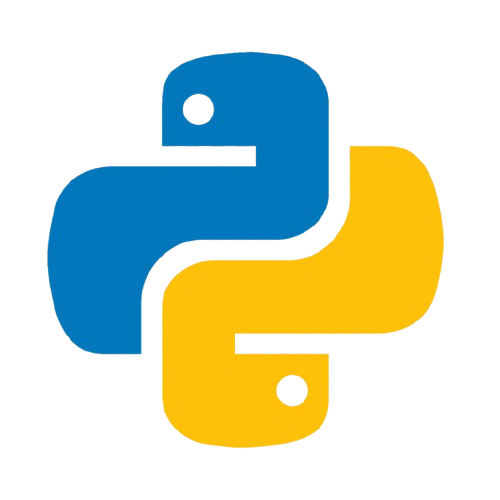
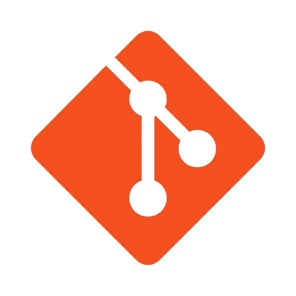
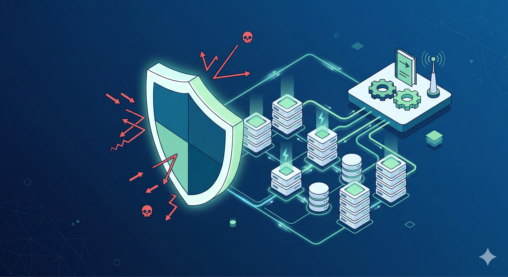
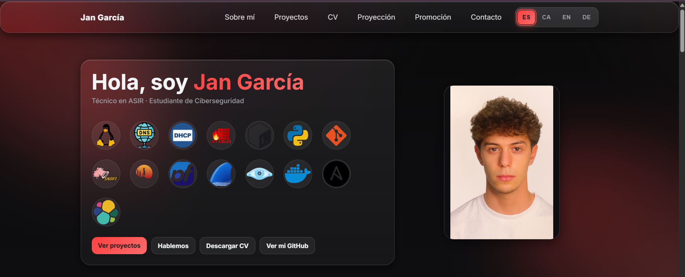
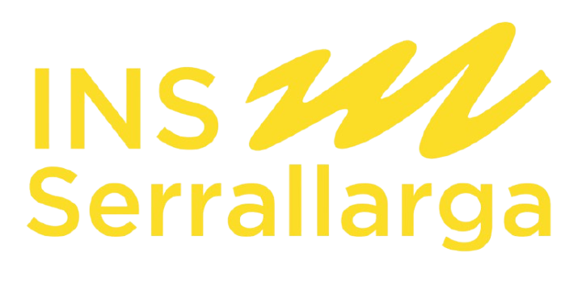
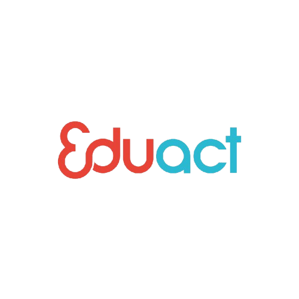

Hola, soy Jan García
Técnico en ASIR · Estudiante de Ciberseguridad





Sobre mí
Técnico en ASIR y estudiante de Ciberseguridad con experiencia previa como soporte técnico en entornos de hosting web, gestionando DNS, logs y servidores entre otros ámbitos. Perfil técnico con visión global de sistemas, redes y seguridad. Destaco por mi responsabilidad, adaptabilidad, dominio del inglés y capacidad de trabajo en equipo. Busco seguir desarrollándome en el ámbito del hacking ético y la administración de sistemas seguros.
Skills
Tecnologías y herramientas con las que trabajo o sobre las que tengo experiencia práctica.
Redes
Seguridad
Programación
Bases de datos
Herramientas
Virtualización
Software profesional
Idiomas y certificaciones
Proyectos destacados
Algunos labs y prácticas orientadas a seguridad y sistemas.

Laboratorio IDS/IPS + Ansible
Implementación de un sistema de detección de intrusiones con Suricata, monitorización con Elastic Stack y respuesta activa automatizada mediante iptables. Incluye despliegue y automatización de servicios con Ansible en entorno Docker.

Portafolio personal
Desarrollo de un portfolio web personal orientado a mostrar proyectos técnicos, experiencia y objetivos profesionales. Incluye diseño responsive, sistema multi-idioma y estructura enfocada a empleabilidad en el sector IT.
Currículum
cdmon, Malgrat de mar
Mar 2025 — Dic 2025Soporte técnico (Customer Care)
- Gestión y resolución de incidencias técnicas en entornos de hosting
- Administración básica de servidores y redes
- Monitorización y análisis de logs y tráfico
- Soporte técnico avanzado y atención al cliente

Institut Serrallarga, Blanes
Oct 2023 — Abr 2024Técnico informático en prácticas
- Gestión de correos
- Soporte informático a los alumnos
- Reparaciones de dispositivos

Eduact, Thessaloniki (Grecia)
Abr 2024 — May 2024Técnico informático (Erasmus+)
- Soporte técnico en entorno internacional
- Tareas de mantenimiento
- Atención a usuarios

Grado Superior de ASIR — Institut Sa Palomera, Blanes
Sep 2024 — May 2026Administración de Sistemas Informáticos en Red
- Redes
- Sistemas
- Virtualización
- Seguridad básica
- Scripting (Bash/Python)
- Bases de datos (SQL)
Grado Medio de SMR — Institut Sa Palomera, Blanes
Sep 2022 — Jun 2024Sistemas Microinformáticos y Redes
- Fundamentos de hardware
- Sistemas
- Redes
- Soporte a usuarios
Certificaciones y logros
- Microsoft Excel 2019
- Microsoft Word 2019
- Microsoft PowerPoint 2019
- Cambridge C1 Advanced
Proyección profesional
Mi objetivo profesional es orientar mi trayectoria hacia el ámbito de la ciberseguridad, partiendo de una base sólida en sistemas, redes y administración de infraestructuras IT. Aunque todavía estoy definiendo en qué área concreta me gustaría especializarme, tengo un interés claro por la seguridad informática y por seguir formándome en este sector.
Interés profesional
Mi intención es desarrollar mi carrera dentro del sector de la ciberseguridad, en un perfil técnico que me permita trabajar con sistemas, redes y protección de infraestructuras tecnológicas.
Áreas que me interesan especialmente:
- Seguridad de sistemas y servidores
- Protección y supervisión de redes
- Análisis de vulnerabilidades
- Monitorización y respuesta ante incidentes
- Seguridad en entornos cloud
Entorno profesional deseado
Me gustaría trabajar en empresas del sector tecnológico donde pueda continuar aprendiendo y adquirir experiencia real en administración de sistemas, redes y seguridad informática.
Características de las empresas objetivo:
- Entornos tecnológicos modernos y en evolución
- Uso de infraestructuras, redes, servidores o cloud
- Posibilidad de crecimiento profesional
- Trabajo técnico orientado a la resolución de problemas
- Aprendizaje continuo y actualización constante
Itinerario formativo
Para avanzar hacia este objetivo profesional, mi plan es seguir ampliando mi formación académica y técnica de forma progresiva.
- Finalizar el CFGS en Administración de Sistemas Informáticos en Red
- Cursar un grado universitario relacionado con la ciberseguridad
- Obtener certificaciones técnicas como CompTIA Security+ y otras del ámbito de la seguridad
- Seguir desarrollando proyectos prácticos y portfolio técnico
- Mantener una formación continua en sistemas, redes y ciberseguridad
Plan de promoción personal
Estrategia personal enfocada al crecimiento profesional, la formación continua y la mejora de la empleabilidad dentro del sector tecnológico.
Estrategias
Desarrollo de marca personal
Mantener un perfil profesional activo mediante GitHub, mostrando proyectos reales relacionados con sistemas, redes y ciberseguridad.
Formación continua
Ampliar conocimientos mediante estudios universitarios, certificaciones y aprendizaje autodidacta en tecnologías y herramientas de seguridad.
Inserción en el mercado laboral
Buscar oportunidades laborales en el sector IT, priorizando posiciones relacionadas con sistemas, administración y ciberseguridad que permitan adquirir experiencia real.
Networking profesional
Crear y mantener una red de contactos en el sector tecnológico mediante plataformas profesionales, entornos académicos y comunidades del sector.
Plan de actuación
1
Corto plazo
Consolidación de la base técnica
Finalizar el CFGS ASIR y reforzar conocimientos en sistemas, redes y seguridad, desarrollando proyectos prácticos y mejorando el portfolio profesional.
2
Medio plazo
Continuidad formativa y especialización
Iniciar estudios universitarios relacionados con la ciberseguridad y obtener certificaciones técnicas como CompTIA Security+ y otras orientadas al ámbito de la seguridad informática.
3
Largo plazo
Desarrollo profesional en el sector
Acceder a oportunidades profesionales dentro del sector IT, ganar experiencia real y orientar progresivamente el perfil hacia áreas de ciberseguridad más específicas.
Contacto
¿Tienes una idea o una vacante? Escríbeme y te respondo.
Teléfono: +34 653 791 002